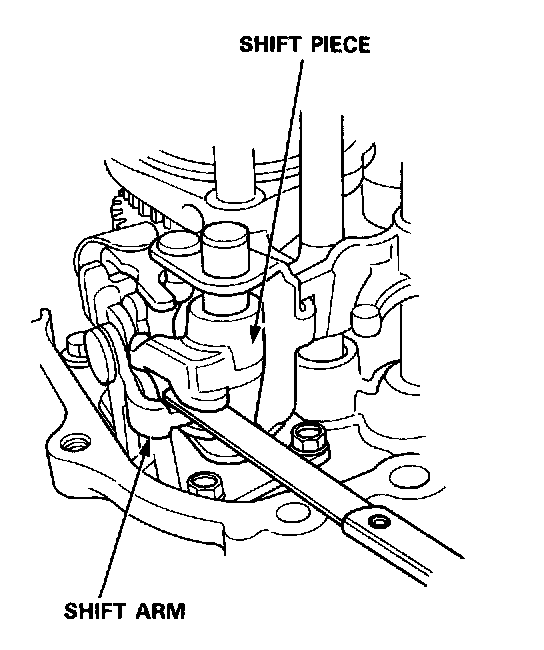
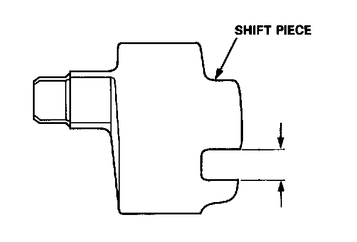
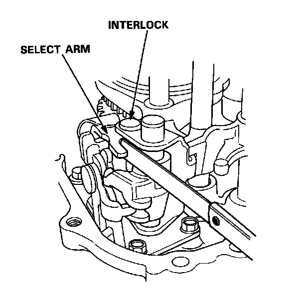
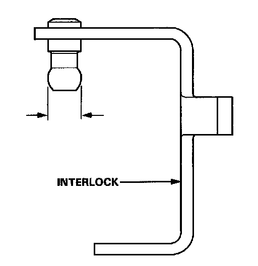
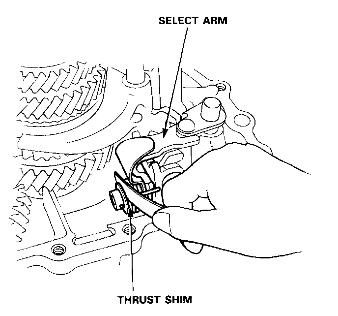
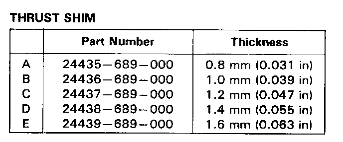
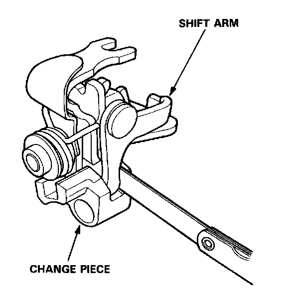
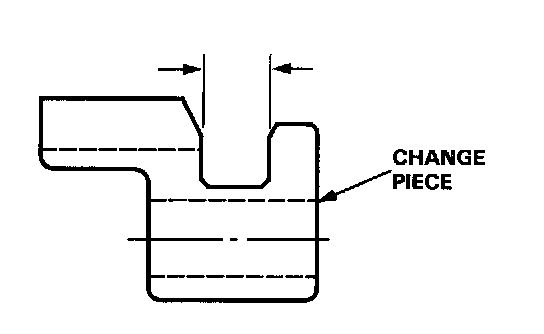
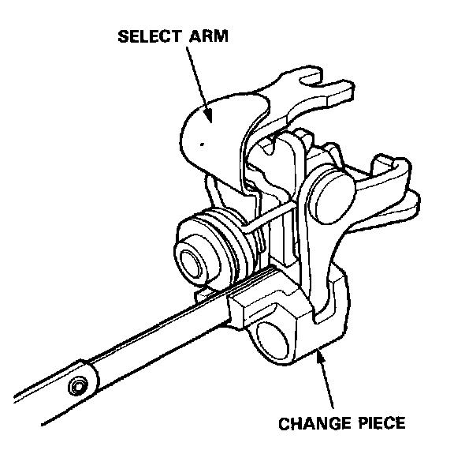
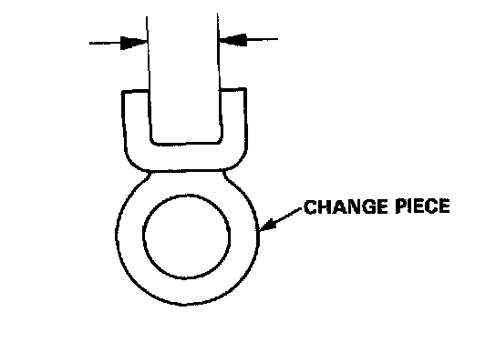

Manual Transmission/Transaxle: Testing and Inspection
Change Holder Clearance Inspection
1. Measure the clearance between the shift piece and shift arm
Standard: 0.1-0.3 mm (0.004-0.012 in)
Service Limit: 0.6 mm (0.024 in)

2. If the clearance exceeds the service limit, measure the width of the groove in the shift piece.
Standard: 8.1-8.2 mm (0.319-0.329 in)
- If the width of the groove exceeds the standard, replace the shift piece.
- If the width of the groove is within the standard, replace the shift arm.

3. Measure the clearance between the select arm and interlock.
Standard: 0.05-0.25 mm (0.002-0.010 in)
Service Limit: 0.5 mm (0.020 in)

4. If the clearance exceeds the service limit, measure the width of the interlock.
Standard: 9.9-10.0 mm (0.390-0.394 in)
- If the width is less than the standard, replace the interlock.
- If the width is within the standard, replace the select arm.

5. Measure the clearance between the select arm and thrust shim.
Standard: 0.01-0.20 mm l0.0004-0.0080 in)

6. If the clearance exceeds the standard, select the appropriate thrust shim for the correct clearance from the image.

7. Measure the clearance between the shift arm and change piece.
Standard: 0.05-0.35 mm (0.002-0.014 in)
Service Limit: 0.8 mm (0.031 in)

8. If the clearance exceeds the service limit, measure the groove of the change piece.
Standard: 11.8-12.0 mm (0.465-0.472 in)
- If the groove exceeds the standard, replace the change piece.
- If the groove is within the standard, replace the shift arm.

9. Measure the clearance between the select arm and change piece.
Standard: 0.05-0.25 mm (0.002-0.01 in)
Service Limit: 0.5 mm (0.020 in)

10. If the clearance exceeds the service limit, measure the width of the groove in the change piece.
Standard: 12.05-12.15 mm (0.474-0.478 in)
- If the width exceeds the standard, replace the change piece.
- If the width is within the standard, replace the select arm.